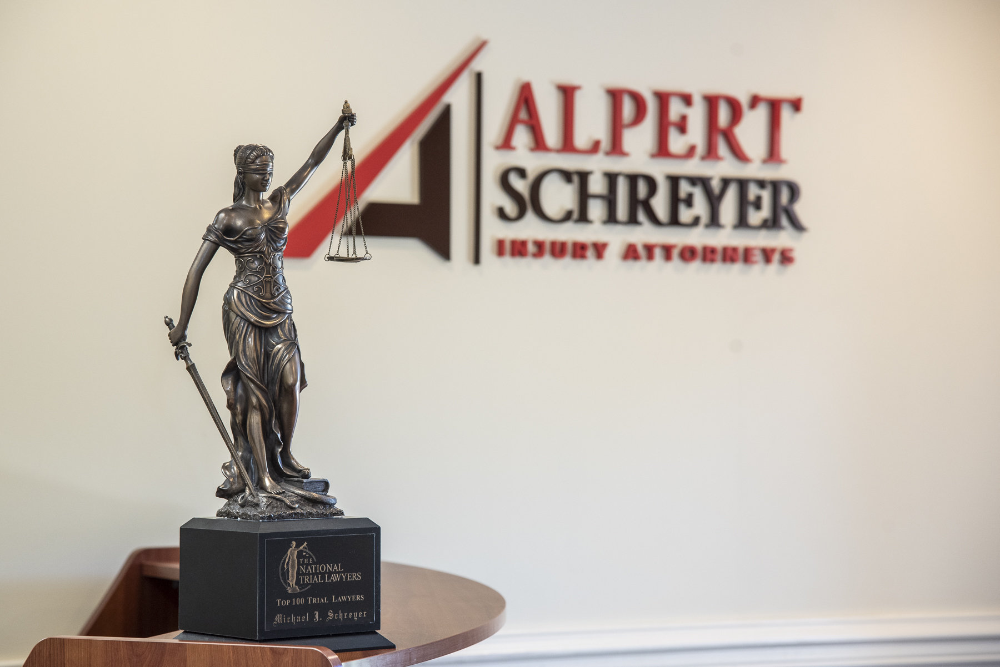

Experiencia y Dedicación
Abogados de Lesiones Personales en Maryland
Centrados en tu Recuperación Total
Obtén una consulta gratuita
Consulta gratuita. Respondemos el mismo día hábil.
Un miembro de nuestro equipo te llamará al número que proporcionaste. Si es urgente, llama al (301) 932-9997.
Experiencia comprobada
Lo que ofreció la aseguradora.
Lo que otorgó el jurado.
Un jurado otorgó $543,000 en el Condado de Prince George después de que la defensa solo ofreciera $5,000 por las lesiones de nuestro cliente. Las barras están dibujadas a escala.
Los Mejores Abogados de Lesiones Personales de Maryland
Necesitas un abogado de lesiones personales que te ayude a GANAR tu caso.
En Maryland ocurren accidentes, pero no deberías tener que pagar el precio de la negligencia de otra persona. En Alpert Schreyer Personal Injury Lawyers, nuestros abogados de lesiones personales comprenden lo abrumadora que puede ser una lesión. Ahí es donde intervenimos.
Nuestro experimentado equipo jurídico se dedica a luchar por tus derechos y a conseguir la indemnización que necesitas para seguir adelante. Tanto si te lesionaste en un accidente de auto, un resbalón o caída, un incidente laboral u otro tipo de accidente, tenemos los conocimientos necesarios para ocuparnos de todo.
Permítenos quitarte la carga legal de encima para que puedas concentrarte en curarte. Ponte en contacto con nosotros hoy mismo para una consulta gratuita y descubre cómo podemos ayudarte a que obtengas la justicia y la indemnización que te corresponden.

Nuestros Resultados Hablan por sí Solos
Nuestros Resultados Hablan por sí Solos
Veredicto por Complicaciones Postoperatorias
Acuerdo por Lesiones de Nacimiento
Indemnización por Retraso Quirúrgico
Sentencia del Jurado — Ciudad de BaltimoreUna empresa constructora y la ciudad de Baltimore crearon un peligro vial al instalar una valla de 4.5 metros de largo que podía abrirse hacia el tránsito en sentido contrario. La valla de tubo de acero golpeó a un automóvil que pasaba y causó lesiones cerebrales permanentes al conductor.
Retraso en el Desarrollo de un Bebé Consecuencia de Lesión de Nacimiento
Accidente con Vehículo IndustrialJunio de 2014 – Accidente con un vehículo comercial en los suburbios de Washington, DC. Falleció un pasajero, el conductor sufrió lesiones pulmonares potencialmente mortales y fracturas bilaterales de muñeca.
Un jurado otorgó $543,000 en el Condado de Prince George después de que la defensa solo ofreciera $5,000 por las lesiones de nuestro cliente.
Los resultados anteriores no garantizan un resultado similar. Cada caso es diferente y depende de sus propios hechos.
En Alpert Schreyer Personal Injury Lawye…
¿Cómo Pueden Ayudar Alpert Schreyer Personal Injury Lawyers tras un Accidente?
En Alpert Schreyer Personal Injury Lawyers, nos encargamos de todo el trabajo legal para que puedas concentrarte en lo que de verdad importa: tu recuperación.
- Investigando tu caso: Reuniremos pruebas, entrevistaremos a testigos y trabajaremos con expertos para construir un caso sólido en tu nombre.
- Tratando con las compañías de seguros: Las aseguradoras suelen intentar minimizar los pagos, pero conocemos sus tácticas. Negociaremos agresivamente para asegurarnos de que obtienes una indemnización justa.
- Calculando tus daños: No se trata solo de las facturas médicas. Tendremos en cuenta el lucro cesante, el dolor y el sufrimiento, los gastos futuros y mucho más para maximizar tu reclamo.
- Llevando tu caso a los tribunales (si es necesario): Aunque muchos casos llegan a un acuerdo, siempre estamos dispuestos a luchar por ti en los tribunales si eso es lo que hace falta para ganar.
- Te damos tranquilidad: Las batallas legales pueden ser estresantes, pero con nosotros a tu lado, nunca tendrás que afrontarlas solo.


Opiniones de Clientes
¡No puedo dejar de recomendar a Alpert Schreyer Injury Lawyers! Elegimos el despacho para un caso muy difícil de accidente de auto. Todos han sido de gran ayuda. Nos mantuvieron informados durante todo el proceso y llegaron hasta el final con un resultado excepcional. ¡Llámalos! ¡Son fantásticos!
Áreas de Práctica
Casos que Manejamos
Accidentes de Auto
En Maryland se producen accidentes de auto todos los días. Tanto si te atropelló un conductor ebrio, distraído o negligente, te mereces una indemnización justa por tus lesiones.
Más informaciónAccidentes de Camión
Los accidentes con camiones comerciales suelen causar lesiones graves. Podemos ayudarte a responsabilizar al conductor y a la empresa de transporte.
Más informaciónAccidentes de Moto
Los datos del Departamento de Transporte de Maryland informan de que el estado tiene un promedio de 73 víctimas mortales al año por accidentes de moto. La mayoría pueden evitarse.
Más informaciónCompensación Laboral
Si te lesionaste en el trabajo, puedes tener derecho a prestaciones por compensación laboral. Nuestros abogados pueden ayudarte a conseguir lo que te corresponde.
Más informaciónResbalones y Caídas
Los propietarios tienen el deber de mantener sus instalaciones seguras. Si te lesionaste en un resbalón o caída, podemos ayudarte a solicitar una indemnización.
Más informaciónMordeduras de Perro
Si tú o un ser querido fueron mordidos por el perro de otra persona, el propietario puede ser responsable de los daños resultantes.
Más información¿Por qué Debería Contratar a un Abogado de Lesiones Personales?
¿Por qué Debería Contratar a un Abogado de Lesiones Personales?
Te Mereces un Abogado con Experiencia
Los casos complejos de lesiones exigen conocer las leyes sobre seguros y lesiones. Los errores en el proceso de reclamo pueden reducir drásticamente tu indemnización. Las aseguradoras intentarán aprovecharse de tus errores y presionarte para que aceptes ofertas inadecuadas.
Determinar el Valor Real de tu Reclamo
No aceptes la evaluación de la aseguradora al pie de la letra. Pueden culparte o restar importancia a tus daños para limitar su responsabilidad. Nunca debes aceptar una oferta inicial sin consultar a un abogado.
Priorizar tu Recuperación
La recuperación tras un accidente requiere mucho descanso. No deberías tener que administrar reclamos al seguro cuando estás concentrado en tu salud. Tu abogado de accidentes se encargará de todos los aspectos de tu caso.
Protección Contra el Injusto Desplazamiento de Culpas
Las aseguradoras suelen culpar a las víctimas. Las estrictas leyes de negligencia contribuyente de Maryland te impiden recuperar una indemnización si compartes incluso una culpa menor. Un abogado con experiencia puede defenderte contra una falsa culpabilidad.
Nuestros Abogados
Nuestros Abogados
Nuestros clientes eligen a nuestros abogados antes que a otros despachos porque demostramos una excelente relación con el cliente y resultados satisfactorios.
Preguntas Frecuentes
Preguntas Frecuentes Sobre Lesiones Personales
¿Qué Tipo de Indemnizaciones Pueden Solicitar las Víctimas de Accidentes?
Si has sufrido lesiones por la negligencia de otra persona en Maryland, puedes tener derecho a una indemnización, pero ¿qué puedes recuperar exactamente? En los casos de lesiones personales, los daños se dividen en dos categorías principales: daños económicos y no económicos.
Los daños económicos son pérdidas financieras tangibles relacionadas con tu lesión, entre ellas:
- Facturas médicas
- Fisioterapia
- Salarios perdidos
- Pérdida de capacidad laboral
- Daños materiales
- Gastos de bolsillo
Los daños no económicos compensan los daños físicos y emocionales que te ha causado la lesión, incluidos:
- Dolor y sufrimiento
- Angustia emocional
- Pérdida del disfrute de la vida
- Desfiguración o cicatrización
- Pérdida de compañía
En los casos en que la conducta de la parte culpable haya sido maliciosa o especialmente atroz, pueden concederse daños punitivos. Con ellos se pretende castigar al infractor y disuadir de comportamientos similares en el futuro.
¿Cuánto Tiempo tengo para Presentar una Demanda por Lesiones Personales en Maryland?
Como tal vez ya sepas, tras una lesión no tienes toda la vida para iniciar acciones legales. La ley de Maryland establece un estricto plazo de prescripción para presentar una demanda. En la mayoría de los casos de lesiones personales, tienes tres años desde la fecha del accidente para presentarla (con algunas excepciones limitadas). Si no cumples el plazo aplicable, podrías perder tu derecho a la indemnización.
Además, esperar demasiado para iniciar el reclamo puede perjudicar tus posibilidades de éxito. Las pruebas se desvanecen, los testigos olvidan detalles, y las compañías de seguros intentarán retrasarlo. Cuanto antes actúes, más sólido será tu caso.
¿Puedo Recuperar una Indemnización si me Culpan de un Accidente en Maryland?
Si te has lesionado en un accidente, puedes suponer que tienes derecho a una indemnización, pero Maryland tiene una de las leyes de culpa compartida más duras del país. Con arreglo a la teoría de la negligencia puramente contributiva, si se determina que tuviste aunque solo fuera un 1% de culpa en el accidente, es posible que se te prohíba por completo recuperar indemnización alguna.
Maryland es uno de los pocos estados que sigue una norma de negligencia contributiva pura. Esto significa que si la otra parte puede demostrar que tuviste alguna responsabilidad —por pequeña que sea—, es posible que no puedas recuperar los daños.
Las leyes de Maryland son duras, pero sabemos cómo ganar casos difíciles. Si te has lesionado, no dejes que la compañía de seguros utilice la negligencia contribuyente contra ti.
¿Irá a Juicio mi Caso de Lesiones Personales?
Más del 90% de los casos de lesiones personales llegan a un acuerdo. Las compañías de seguros suelen preferir llegar a un acuerdo antes que arriesgarse a un litigio costoso e imprevisible. Sin embargo, algunos casos tienen más probabilidades de llegar a juicio que otros.
Tu caso puede requerir juicio si:
- La compañía de seguros infravalora tus daños y se niega a negociar un acuerdo justo.
- La aseguradora te culpa del accidente o te acusa de no haber mitigado los daños.
- Hay varias partes culpables en tu caso.
¿Cuánto Vale mi Caso de Lesiones Personales?
Una de las preguntas más habituales que nos hacen es: "¿Cuánto vale mi caso de lesiones personales?". La respuesta depende de varios factores, pero en Alpert Schreyer Personal Injury Lawyers trabajaremos sin descanso para maximizar tu indemnización.
- Gastos Médicos: Las facturas médicas actuales y futuras, la rehabilitación y el tratamiento necesario se tendrán en cuenta en tu reclamo.
- Salarios Perdidos y Potencial de Ingresos: Si tu lesión te hizo faltar al trabajo o afectó a tu capacidad de obtener ingresos en el futuro, lucharemos por recuperar esas pérdidas.
- Dolor y Sufrimiento: La indemnización no se limita a las pérdidas económicas.
- Daños Materiales: Si tu vehículo o tus efectos personales resultaron dañados, sus costos de reparación o sustitución se incluyen en tu reclamo.
- Responsabilidad y Cobertura del Seguro: La póliza de seguro de la parte culpable y su nivel de responsabilidad influyen en la cantidad final del acuerdo.

Consulta gratuita.
¿Listo para Comenzar?
Estamos aquí 24/7
Contacto
Ponte en Contacto con Nuestros Abogados para una Consulta Inicial Gratuita
Una lesión personal puede poner tu vida de cabeza, pero no tienes por qué afrontarlo solo. En Alpert Schreyer Personal Injury Lawyers, estamos aquí para luchar por tus derechos, manejar las complejidades legales y asegurarnos de que obtienes la indemnización que necesitas para seguir adelante.
Ya has padecido bastante. Déjanos quitarte ese peso de encima para que puedas concentrarte en recuperarte. Con nuestra experiencia, dedicación y promesa de no cobrar nada si no ganas, no tienes nada que perder, solo ganar justicia.
Nuestras Oficinas